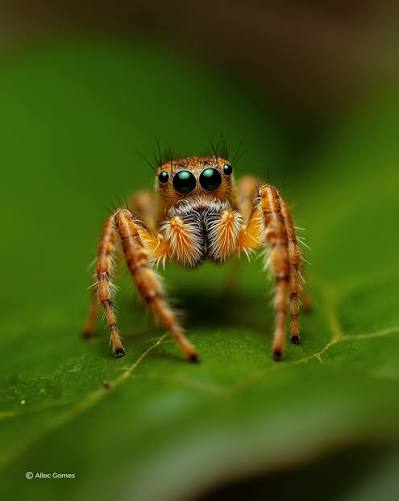

Insecta
Aranha Saltadora
Plexippus paykulli
Aracnídeo de porte pequeno a médio, corpo compacto e pernas curtas e robustas adaptadas ao salto por pressão hidráulica. Possui oito olhos, com o par frontal ampliado que confere visão de alta resolução e percepção de profundidade para caça. Não utiliza teias geométricas para captura de presas, fixando apenas um fio de seda como linha de segurança antes de saltar.
- Habitat: Ambientes quentes e ensolarados, incluindo jardins, vegetação, muros, cercas, áreas urbanas e interior de construções.
- Hábito: Predadora ativa e predominantemente diurna; caça à espreita e por salto sobre insetos e outros pequenos artrópodes, além de construir abrigos de seda para descanso, muda e postura de ovos.
- Importância: Atua no controle biológico natural de populações de insetos e artrópodes em ambientes naturais, agrícolas e urbanos.